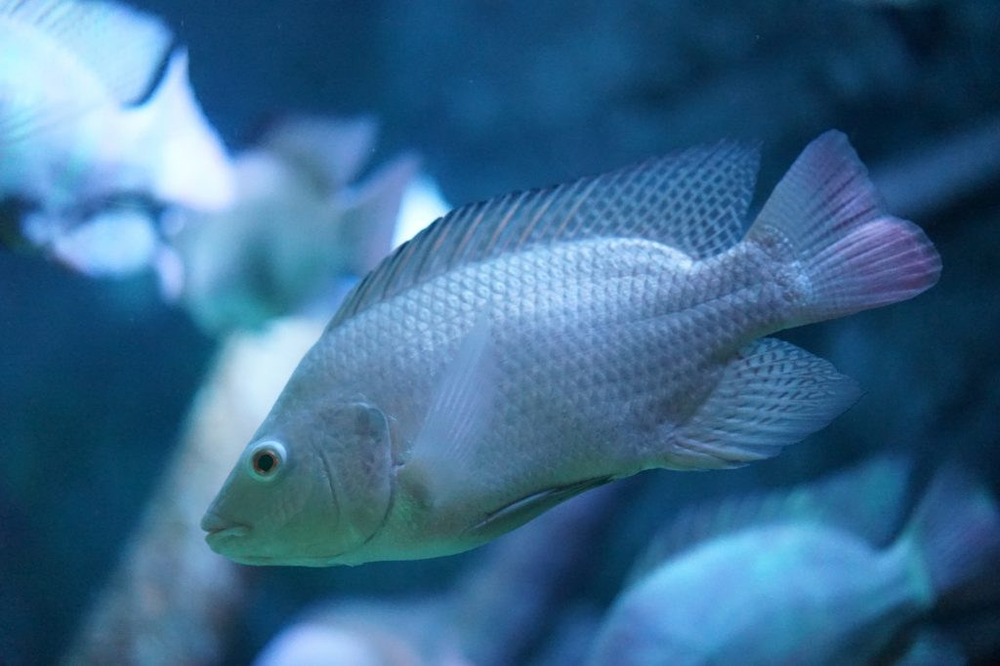

- Tilapia Azul
Cuerpo comprimido. Boca protráctil, por lo general ancha a menudo bordeada
por labios hinchados. Las mandíbulas presentan dientes cónicos. Como característica
típica a nivel familia tiene la línea lateral interrumpida, la parte anterior
termina por lo regular como al final de la dorsal y se inicia de nuevo dos
o tres
filas de escamas más abajo, con aletas dorsales largas.

por labios hinchados. Las mandíbulas presentan dientes cónicos. Como característica
típica a nivel familia tiene la línea lateral interrumpida, la parte anterior
termina por lo regular como al final de la dorsal y se inicia de nuevo dos
o tres filas de escamas más abajo, con aletas dorsales largas.
Presentan en todo el cuerpo un color azul verde metálico, en particular en la cabeza.
El vientre es claro. Aleta dorsal y parte terminal de la aleta caudal de color roja.
Su longitud patrón máxima observada es de unos 35 cm. con un peso aproximado algo
superior a 3 kg.
Distribución:
Es una especie que se la encuentra a lo largo de la columna de agua y
se la captura en toda la altura de las redes agalleras. Su dieta indica también hábitos
de media agua y de fondo. Se le encuentra en toda la presa, pero prefiere las zonas
someras, en especial durante la época de verano, cuando desova. En invierno
disminuye gradualmente su captura.